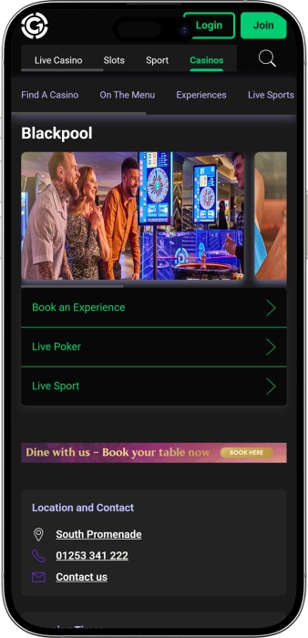

Exclusive welcome offer of
Exclusive welcome bonus of
Grosvenor Casino Blackpool — 24/7 gaming, poker, bars and entertainment
Top Casino
Bonus Details
Casino
Bonuses
Rate
Free Spins
More Info
Get
Advantages
- Grosvenor Casino Blackpool stands out for its all-in-one night out: gaming, dining, and entertainment in one place.
-
Open 24/7 for flexible visits.
-
Wide range of slots and e-games.
-
Live tables: roulette and blackjack.
-
Poker room with cash and tournaments.
-
Progressive jackpots and big win potential.
-
Game promos: free spins, bonus credits.
-
Major series with strong prize pools.
- Newcomers appreciate the welcoming vibe, while regulars come back for variety, promos, and poker action.
Grosvenor Casino Blackpool App


About Grosvenor Casino Blackpool
It stands out for 24/7 access and a poker-led identity. Everything is set up for a seamless night out: tables, slots, food, and entertainment in one venue.
- Bonus: wins up to £2,000.
- Deposit £20, play £50.
- Poker series: £100,000 guarantees.
Grosvenor Casino Blackpool is a modern seaside casino with an energetic, holiday-style buzz. Inside, it feels lively without being overwhelming, thanks to a layout that suits both first-timers and regulars. The gaming floor blends live tables with a strong line-up of electronic play.
Poker is a major draw and often the headline reason people visit. The overall vibe works for a quick drop-in as well as a planned night out. Food and drink are close at hand, so you can take a break without leaving the venue. Weekdays tend to feel more relaxed, while evenings can ramp up in pace. Weekends usually bring a more celebratory mood with added entertainment. Staff are on hand to help with directions, game basics, and general queries, making the experience approachable. All in, it’s a place where gaming, socialising, and downtime fit naturally into one evening.
The Grosvenor Casino Blackpool vibe: gaming, dining, and late-night energy
Grosvenor Casino Blackpool welcomes guests with a contemporary look and a seaside buzz, blending bright gaming areas with calmer spaces to unwind. The atmosphere feels lively yet friendly, so you can arrive with friends, as a couple, or solo and quickly find your pace. The layout typically makes it easy to move between slots, live tables, and the poker area without feeling lost. You don’t need to over-plan the visit — just bring the right mood for entertainment and a few minutes to settle in.
Opening hours are a standout benefit: the venue runs 24/7, so you can fit a visit around almost any schedule. Daytime often suits relaxed play and shorter sessions, while evenings lean into a more classic nightlife feel. Live tables commonly come into their own later in the day, adding that traditional casino atmosphere. This rhythm works especially well if you prefer late-night leisure without a strict timetable.
The bar side adds real value, giving you a proper break spot to talk, reset, and enjoy the night beyond the gaming floor. You’ll typically find a main bar for drinks and light bites, plus areas that suit sports viewing and downtime between hands and spins. The bar experience is designed to feel like part of the night out, not just a functional counter. That matters if you want a full evening rather than “just gambling”.
Events and entertainment keep the venue feeling active, with weekends often bringing a more celebratory tone and poker schedules strengthening around special dates. The poker room can become a focal point thanks to tournaments and cash games that deliver a real sense of action. It’s also convenient for groups, as you can combine play and entertainment without travelling elsewhere. Overall, it’s easy to build a multi-part evening here: gaming, food, sport or live entertainment.
Bonus offers and rewards are usually linked to membership and play activity. A single account or membership card format can simplify access to offers and personalise promotions over time. New members may see welcome-style mechanics, while regulars often receive more tailored deals aligned with how they play. As terms can change, it’s sensible to check current details with staff, especially if you’re visiting for a specific promotion.
Service and money matters at Grosvenor Casino Blackpool: staff, payments, and collecting winnings
Staff at Grosvenor Casino Blackpool typically act as guides to the experience: reception helps with sign-in, explains the basics, and points you in the right direction depending on what you want to do. At live tables, dealers keep play moving and are usually happy to clarify simple rules, especially for newcomers learning how bets are placed. In the poker area, you’ll often find dedicated support for seating, waiting lists, and tournament logistics. Bar and restaurant service tends to match the “night out” feel, prioritising comfort and pace.
English is the main language, and in a busy visitor destination staff often understand straightforward requests from international guests. Even if your English isn’t perfect, common phrases usually do the job, and dealers can explain procedures clearly and quickly. For more detailed questions — promotions, membership, or ID rules — reception or a duty manager is the best route. Communication is generally designed to keep the experience smooth and low-pressure for first-time visitors.
Payments are typically handled in pounds sterling, and card payments are commonly used for food and drink. For gaming, the usual approach is buying chips or credits at the cashier desk, where cash and cards may be accepted under venue rules and security requirements. Limits can apply, and larger transactions may trigger additional checks. That’s standard practice to protect customers and meet safety obligations.
ATMs and currency exchange are usually handled via nearby cashpoints or guidance from staff on the closest options. Inside the casino, the focus tends to be on convenient ways to fund play rather than offering a full bureau de change. If you’re arriving with foreign currency, it’s smart to exchange some in advance or confirm nearby options so you don’t lose time during peak evening hours. Planning a little here makes the night feel effortless.
How you collect winnings depends on the game and the amount. Slots and electronic games often pay via a ticket/voucher or credit balance that can be cashed out at the desk. Table-game wins are paid in chips and then exchanged for money at the cashier. For larger sums, you may be offered alternatives to cash, such as bank transfer, and you should expect routine ID checks as part of normal security procedures.
The tax question comes up often: “Do I pay tax on winnings?” For most private individuals, gambling winnings are generally not taxed separately at the player level, though personal circumstances can vary, especially for professional activity or unusual income situations. You may still see identity and source-of-funds checks for sizeable cashouts — that’s compliance rather than taxation. If you’re unsure, staff can explain the venue’s process, and you can seek independent advice for your specific situation.
Visiting rules at Grosvenor Casino Blackpool: entry, dress code, and getting there
A visit typically begins at reception where you sign in and, if needed, show identification. Entry is for adults only, and venues often operate an age-check policy for anyone who looks under a certain age. The usual dress standard is smart casual, so neat everyday clothing is fine without going overly formal. The aim is comfort, but a tidy appearance is expected. At live tables, etiquette matters: don’t disrupt the dealer, don’t handle cards or chips out of turn, and keep the game flowing. Loud phone calls and filming are generally discouraged to protect the experience and privacy of others. Alcohol service follows house rules, and excessive intoxication can lead to refusal of service or entry. Keep personal belongings secure and avoid leaving items unattended. If you’re aiming for poker or a busy weekend evening, arriving early helps due to potential waits for seats and tables. Groups often benefit from booking, especially for restaurant seating. Timing is flexible because the venue runs 24/7, with table-game energy usually strongest later in the day.
- • Age and ID: entry is 18+; photo ID (passport or driving licence) may be requested if you look young.
- • Dress code: smart casual; best to avoid sportswear extremes, dirty clothing, and offensive prints; hats may need to be removed.
- • Conduct and restrictions: don’t interfere with play, handle the deal, or film tables closely; no coaching, arguments, or breaches of fair-play rules.
- • Parking: use on-site/nearby parking where available or nearby public car parks along the promenade; arrive early at peak times.
- • Getting there: taxis and public transport to the promenade and The Sandcastle area are the easiest options; walking from southern promenade attractions is straightforward.
- • Best time to visit: evenings and late nights suit live tables; slots and electronic games work well at any hour.
Loyalty at Grosvenor Casino Blackpool: membership, points, and perks
The loyalty experience at Grosvenor Casino Blackpool is typically built around membership and a guest profile that rewards play with offers and privileges. The idea is simple: the more often you visit and play, the more benefits tend to unlock over time. Many guests value a single membership format — a card/account approach that can streamline sign-in and open access to promotions. Rewards may appear as points, tailored offers, or member-only deals that you can exchange for bonuses, gifts, or in-venue privileges. Birthday treats and seasonal member campaigns are often part of the mix for active customers. A key feature is personalisation: regulars are more likely to receive offers aligned to how they play, whether that’s slots, tables, or poker. Joining is usually straightforward, though enhanced perks can require verified details. As activity increases, service-style benefits can become more noticeable, from smoother entry to invitations. In some cases, higher-tier recognition can be invite-only, based on consistent activity and good standing. It’s worth checking current terms before you visit, as mechanics and limits can change. Overall, the loyalty approach is designed to make repeat visits feel more rewarding and more comfortable.
Registration requirements:
- • 18+ age requirement and photo ID for sign-up.
- • Basic form completion (name, date of birth, contact details).
- • Acceptance of membership and data terms.
Tiers and how they’re reached
- • Member (entry): available on registration; access to standard member promos.
- • Gold (enhanced): linked to regular activity; often includes more tailored offers and stronger promo boosts.
- • VIP (invitation): for the most active guests; commonly adds priority service and exclusive invites.
Member perks often available:
- • Welcome-style membership mechanic: “deposit £20, play £50” formats may apply, sometimes with a max bonus-win cap up to £2,000 (terms vary and can change).
- • Slots member offer: periodic slot bonus credits, for example “up to £20 bonus” during campaigns.
- • Birthday treat: a personalised reward (often a credit or voucher).
- • Points-to-gifts: points/rewards can be exchanged for gifts or experiences (catalogue and rules depend on current terms).
- • Faster service: smoother entry or priority handling for higher activity levels.
- • Event invitations: private tournaments, parties, special dinners, or entertainment nights for regulars.
Software Providers
Entertainment and Gaming at Grosvenor Casino Blackpool
Bonuses and special offers at Grosvenor Casino Blackpool: gaming promos, tournaments, and seasonal nights
Beyond loyalty, Grosvenor Casino Blackpool often runs time-limited promotions that add extra value to both gaming and the overall night out. The most visible offers are typically tied to slots and poker: slots bring the excitement of chasing a bigger payout, while poker draws crowds with guaranteed tournaments and multi-day series. If you enjoy live tables, you may also see themed nights or set packages that combine play with food and drink. Entertainment strengthens the experience, giving you reasons to visit even if you’re not planning a long session at the tables. Seasonal moments often align with holidays, calendar events, and major sports broadcasts, when the venue feels especially lively. Promotions can be time-bound and may include conditions such as game eligibility, minimum stakes, or participation windows, so it’s sensible to check details before you start. Most bonuses come with rules, limits, and identity checks for larger payouts, which is normal practice. If you’re visiting with a specific offer in mind, knowing which games qualify and how rewards are issued helps you avoid surprises. Groups and visitors sometimes benefit from “built-in” evening formats where entertainment and gaming are combined in one plan. Poker adds another layer through satellites and mixed buy-in tournaments that let you access bigger events more affordably. Overall, these offers aren’t just bankroll boosts — they help make the night feel more like an event. Treat promotions as a bonus, not a guarantee, and always play responsibly.
- • Welcome-style offer (campaign format): deposit £20 to play with £50; bonus components may carry a max bonus-win cap up to £2,000 under promo terms.
- • Slots campaigns: periodic slot promotions such as “up to £20” in bonus credits or free spins on selected titles (usually with a participating-games list).
- • Progressive jackpots: slot jackpots can reach sizeable amounts; during certain periods, jackpot figures may climb towards £20,000 and beyond depending on the network/game.
- • Guaranteed poker tournaments: regular events may feature guarantees around £1,000–£3,000, while festival dates can go much higher.
- • Major poker series: headline festival guarantees can reach £100,000 levels depending on the specific schedule.
- • Satellites and qualifiers: entry routes into bigger events via lower buy-ins (for example £20–£60), ideal for trying a series on a smaller budget.
- • Themed nights and packages: “dinner + play” or “sports + entertainment” formats with set spend per guest (contents vary by date).
- • Seasonal events: holiday weeks, themed weekends, and big-match nights that may include prize draws and special evening formats.
Popular games at Grosvenor Casino Blackpool: from roulette to poker
The game line-up at Grosvenor Casino Blackpool is typically designed to suit different styles, from quick slot sessions to long poker nights. Classic live tables remain the most recognisable, bringing pace, atmosphere, and dealer interaction. Roulette appeals with straightforward betting and that “one spin” thrill, while blackjack adds decision-making that can shape outcomes. Electronic versions are convenient because they’re available at any hour and keep the action moving without waiting for a seat. Slots are popular for their variety, bonus features, and the chance of a standout win in a single spin. The poker area adds a competitive edge where strategy, discipline, and reading opponents matter. Beginners often benefit from starting at lower limits on electronic games to learn comfortably. If you prefer a traditional casino feel, live tables are especially appealing in the evening. If you like competition and social play, poker cash and tournaments are the natural focus. The visit format is flexible, so you can mix games, take breaks at the bar, and return when you’re ready. Overall, the selection balances classics, modern slots, and a strong poker identity.
- • American Roulette / Roulette: bets on numbers, sections, and chances; fast, easy to learn.
- • Blackjack: aim for 21 without busting; decision-led play with basic strategy.
- • Three Card Poker: quick dealer-versus-player poker; great for pace.
- • Ultimate Texas Hold’em (variant): poker-style play against the dealer with staged betting.
- • Electronic Roulette: faster cycles and a broad range of staking limits.
- • Slots (video slots): huge theme variety, bonus rounds, and jackpot potential.
- • Progressive jackpot slots: pooled jackpots that grow with overall play.
- • Live poker cash games: blind-based tables; flexible sessions with no fixed end.
- • Poker tournaments: set buy-ins, rising blinds, and prize placements.
Betting limits at Grosvenor Casino Blackpool: minimums and maximums by game
Betting ranges at Grosvenor Casino Blackpool are typically set to suit different budgets, from cautious starter stakes to higher limits for experienced players. Live tables often have fixed minimums, while maximums can vary by table and time of day. Slots offer more flexibility, letting you play low denominations or raise stakes for higher win potential. Poker limits are expressed via blinds or buy-ins, so choosing a comfortable format matters. Below is an indicative table of ranges commonly seen in similar settings; exact limits can vary in-venue depending on the table, event, and specific game rules.
| Game Type | Minimum Bet | Maximum Bet |
|---|---|---|
| Roulette (live tables) | £5 | £5,000 |
| Blackjack (live tables) | £5 | £4,000 |
| Three Card Poker (table) | £5 | £400 |
| Electronic roulette | £0.20 | £200 |
| Slots (video slots) | £0.10 | £100 |
| Progressive slots | £0.20 | £200 |
| Poker cash (blinds) | £1/£1 | £5/£10 |
| Poker tournaments (buy-in) | £20 | £250 |
| Tournament satellites | £20 | £60 |
Events and entertainment at Grosvenor Casino Blackpool: live nights, parties, and late vibes
Grosvenor Casino Blackpool is often seen as more than a gaming floor — it’s a nightlife venue with its own entertainment rhythm. Weekends tend to feel more “show-led”, with live performances, music nights, and formats that turn a visit into a proper evening out. Poker is a major part of the identity, drawing players for tournaments, series, and special dates where the room feels competitive and busy. If you prefer a slower pace, the bar and dining side provides a comfortable base for socialising, sports viewing, and breaks between sessions.
Regular entertainment often follows the weekly flow: weekdays suit calmer visits, while Friday and Saturday evenings lean more energetic. Sports viewing is another strong pillar, turning big fixtures into shared moments with a lively crowd and plenty of conversation. It works especially well for groups, where some people play, others watch sport, and everyone can move between areas. That multi-track night out is one of the venue’s biggest strengths.
Late-night formats typically blend music, drinks, and gaming, so your evening can start with dinner and finish with late bets or a poker session. Holidays and group celebrations can be supported by organised formats and package-style evenings where the experience matters as much as play. Even without a headline event, the venue keeps a “live” feel because it runs 24/7 and isn’t locked to one prime-time window.
- • Weekend live entertainment: music and performance-style nights for a nightlife atmosphere.
- • Poker tournaments: regular scheduled events with varying buy-ins and prize structures.
- • Poker series/festivals: multi-day schedules with stronger line-ups and bigger guarantees.
- • Sports lounge area: major sports shown day and night in a social setting.
- • Themed nights: holiday and calendar-driven formats for special weekends.
- • Group occasions: birthdays, corporate evenings, and social nights combining food and entertainment.
- • Slots activity: promo periods, prize draws, and jackpot-driven excitement on the floor.
Food, bars, and downtime at Grosvenor Casino Blackpool: a comfortable night out
Downtime at Grosvenor Casino Blackpool is shaped around an “all-in-one” idea: you can start with food and drinks, move into gaming, then step back to the bar or lounge whenever you like. The restaurant side is especially useful if you want more than just betting and prefer a complete evening that includes dinner. The food offering is often treated as a core part of the visit rather than an afterthought, which is why many guests plan it as a meal first with gaming as the next chapter. That balance keeps the night enjoyable and helps avoid turning it into one continuous session.
Bar spaces typically do two things at once: they provide a social base and reinforce the nightlife atmosphere. It’s an easy place to meet friends, talk through the action, watch sport, and set the pace of your evening. For groups, it works well because some people can relax at the bar while others play, and you can swap roles effortlessly. This makes the visit feel more like a traditional night out rather than a single-purpose trip.
In terms of hotels, the casino experience usually operates as a standalone venue rather than a built-in hotel complex. That said, the surrounding promenade and visitor areas offer plenty of nearby accommodation, making it simple to combine a casino night with an overnight stay. For guests travelling in, this is convenient: you can pick a nearby hotel and walk or take a short taxi ride. If you’re visiting during peak season or major event dates, booking accommodation early is the smart move.
- • The Upper Deck Bar & Grill: a full restaurant experience, ideal for dinner-led evenings.
- • Main bar: drinks, light bites, social time, and breaks between games.
- • Sports lounge area: live sport viewing with a lively, group-friendly feel.
- • Lounge spaces: quieter pockets to reset, chat, and plan your next move.
- • Nearby hotels and apartments: a practical option for pairing the casino with an overnight stay close by.
Frequently Asked Questions
Reception is the easiest place to ask, as table availability can vary by time, demand, and scheduling.
Responsible gambling tools and staff guidance are typically available, including breaks, spending controls, and signposting to support.
Smaller amounts are often paid out promptly at the cashier, while larger sums may involve checks and alternative payment methods, affecting timing.